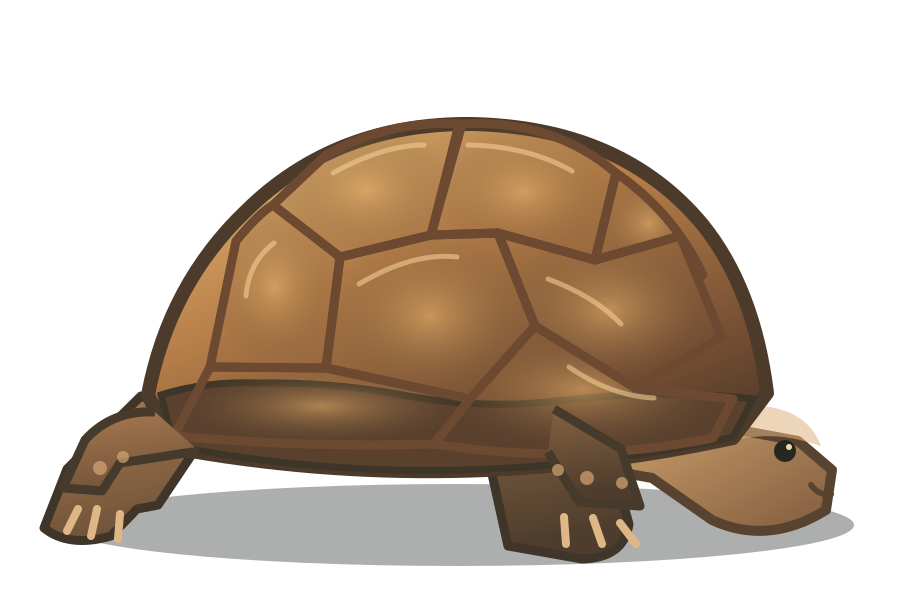

Survey & site planning
Coordinate protocol surveys and habitat information early enough to inform design, access and construction sequencing.
 MOJAVE DESERT / SOUTHERN NEVADA
MOJAVE DESERT / SOUTHERN NEVADA
SLOW AND STEADY / A FIELD SERVICE WEBSITE CONCEPT
Where the tortoise wins the race: a clear home for the biologists who help construction teams plan around Mojave desert tortoise habitat.
NO SHELL GAMES / JUST GOOD PLANNING
For developers, civil contractors, utilities and environmental primes, desert tortoise work is part of a larger compliance plan. The right scope depends on the site, jurisdiction and project approvals. A specialist team translates those requirements into field coverage and documentation. Slow and steady starts with the right plan.
02 / UNDER THE SHELL
Illustrative service categories drawn from agency guidance and the regional market. Any real provider must substantiate its staff authorizations, permits and project scope.
Coordinate protocol surveys and habitat information early enough to inform design, access and construction sequencing.
Plan preactivity clearance, worker awareness and biological monitoring around the measures in the applicable project authorization.
Where project approvals require relocation or translocation, use only personnel with the necessary federal and state authorization and an approved project plan.
Give project teams clear field records, reporting handoffs and communication with the lead biologist and responsible agencies.
ON THE RIGHT TRACK
We protect their shells.
The answers set the scope. This concept does not determine a project’s legal requirements.
03 / FIELD NOTES
These primary references explain why surveys, authorizations and project specific requirements belong at the center of the conversation.
04 / SHELL WE BUILD THIS?
The Wes Foundation is a fictional design study by Topaz Candy. It is not a registered or tax-exempt organization. If you run a verified environmental practice, we can adapt the identity, service language, credentials and enquiry path around your actual work.
Service area · project types · staff qualifications · approval framework · proof of work
Shell we build this? Goes to Topaz Candy’s existing enquiry form. This demo does not book field services.